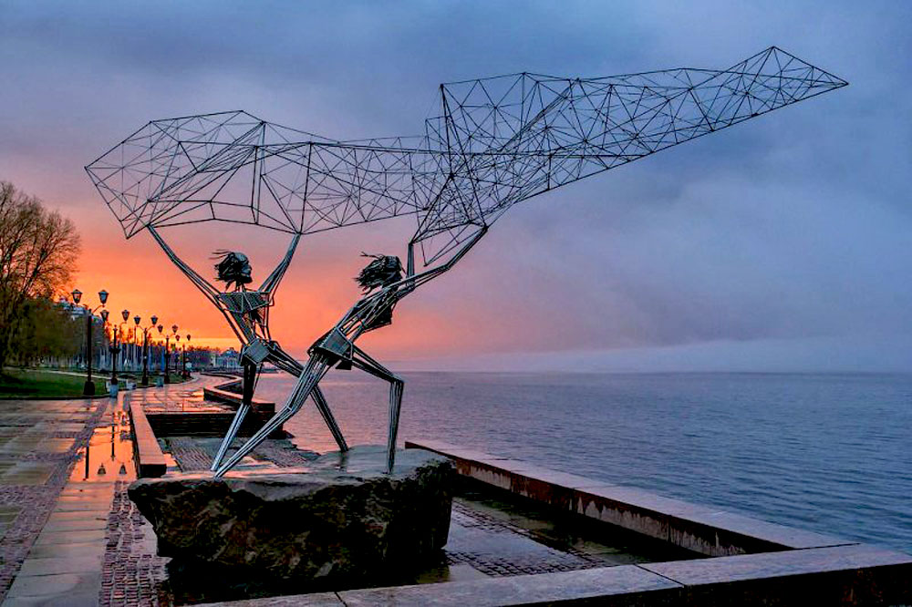

Скульптура “Рыбаки”
Одним из негласных символов Петрозаводска стала скульптура "Рыбаки". Две фигуры из металлических прутьев забрасывают в озеро ажурную сеть. Изящная воздушная скульптура хорошо смотрится как днем на фоне белых облаков и темных вод Онеги, так и на закате в радужных переливах заходящего солнца. Здесь больше всего любят фотографироваться туристы.